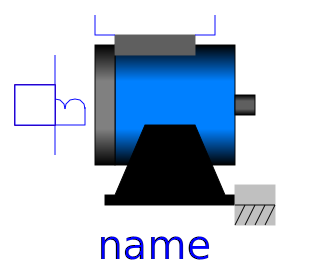

.
Modelica
.
Electrical
.
Machines
.
BasicMachines
.
DCMachines
Information
This package contains models of DC machines:
DC_PermanentMagnet: DC machine with permanent magnet excitation
DC_ElectricalExcited: DC machine with electrical shunt or separate excitation
DC_SeriesExcited: DC machine with series excitation
Contents
Name
Description
DC_PermanentMagnet
Permanent magnet DC machine

DC_ElectricalExcited
Electrical shunt/separate excited linear DC machine
DC_SeriesExcited
Series excited linear DC machine
Revisions
Main Authors:
Anton Haumer
Technical Consulting & Electrical Engineering
D-93049 Regensburg
Germany
email:
a.haumer@haumer.at
v1.02 2004/09/19 Anton Haumer
v1.03 2004/09/24 Anton Haumer
added DC machine with series excitation
v1.1 2004/10/01 Anton Haumer
changed naming and structure
issued to Modelica Standard Library 2.1
v1.2 2004/10/27 Anton Haumer
fixed a bug with support (formerly bearing)
v1.4 2004/11/11 Anton Haumer
removed mechanical flange support
to ease the implementation of a 3D-frame in a future release
v2.2.0 2011/02/10 Anton Haumer
conditional ThermalPort for all machines
Generated at 2020-06-05T21:39:08Z by
OpenModelica 1.16.0~dev-442-g2e5bc9f